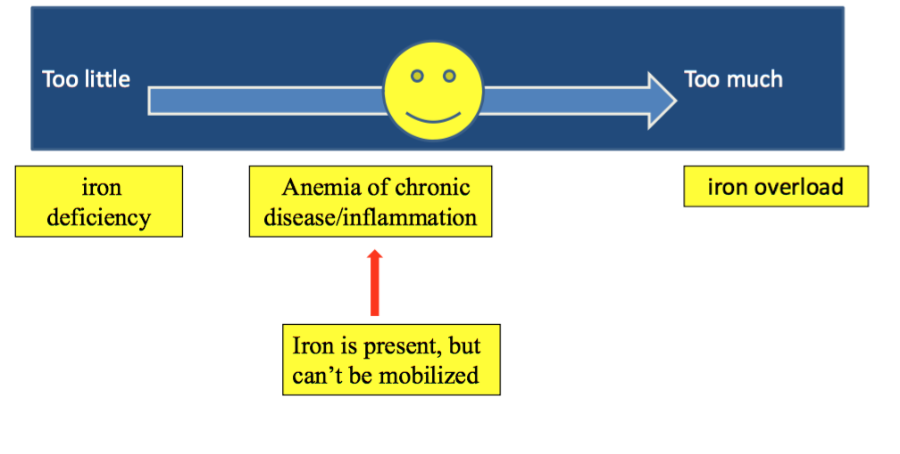

Important Proteins
- Transferrin - transports iron in bloodstream
- Transferrin receptors - takes up iron bound to transferrin into cells (RBC, hepatocytes, macrophages)
- Ferritin - iron storage in cells
- Ferroportin - transmembrane protein that moves iron out of cells
- Hepcidin - negative regulator of available iron, down-regulates iron release from intestine, splenic macrophages, and liver stores
- HFE - regulatory protein that, when mutated, may result in hereditary hemochormatosis
Iron absorption is tightly regulated by hepcidin. Iron is stored in the liver. Excess intake can lead to iron overload, since there's no specific mechanism for secreting iron.
Iron Deficiency
Most common cause of anemia worldwide. Must discover underlying cause of iron deficiency (GI bleed (most common), fibroids, malabsorption, poor dietary intake).
Clinical Findings:
Lab Results
| Test |
Iron-Deficiency Anemia |
| Blood Smear |
Hypochromic (central pallor), microcytic cells |
| Retic Count |
Low |
| RDW |
Elevated |
| Serum Iron |
Decreased |
| TIBC |
Elevated |
| Iron saturation |
Decreased |
| Serum ferritin |
Low |
Treatment:
- Treat the underlying cause/disease!
- Replace iron orally
- GI side effects, black stools
- IV iron
- Quicker response, but risk of severe allergic reaction.
- Only used when oral iron not effective (unable to absorb, intolerant of oral), or fast response needed
Anemia of Chronic Disease (ACD)
ACD is seen in infection, inflammatory disorders, and malignancy, NOT in chronic, non-inflammatory medical illness.
Pathogenesis:
- Sequestration of iron despite adequate iron stores; unable to mobilize iron into RBCs. EPO can drive RBC formation to overcome this.
- Cytokine mediated - IL-6 increases hepcidin production in hepatocytes=> negative regulator of iron mobilization
- Increased hepcidin decreases plasma iron levels
Lab Results:
| Test |
Anemia of Chronic Disease |
| Blood Smear |
Normocytic or Microcytic |
| Retic Count |
Low |
| Serum Iron |
Decreased |
| TIBC |
Normal or Decreased |
| Iron saturation |
Decreased (not as severe as iron deficiency anemia) |
| Serum ferritin |
High (due to inflammation) |
Special Case: Anemia of Chronic Kidney Disease
- Decreased EPO synthesis in failing kidney
- Treated with EPO supplementation, iron supplementation often needed as well
- Improves or resolves w/ transplant
Iron Overload - Hemochromatosis
Too much iron => generation of ROS => tissue damage in multiple organs
Primary (Hereditary) Hemochromatosis
Increased intestinal iron absorption => iron deposition in heart and liver
HFE-related Hemochromatosis:
- Most common form of hereditary hemochromatosis
- Mutation in HFE gene decreases hepcidin => increased iron absorption
- Mutations = C282Y, H63D
- 10% of U.S. caucasians are heterozygous - usually unaffected
- 0.5% are homozygous
- Vast majority of those with clinical symptoms or organ damage are C282Y homozygotes.
- Iron deposition in hepatocytes
Lab Results:
| Test |
HFE Hemochromatosis |
| Serum Iron |
Increased |
| Serum ferritin |
Increased |
| Liver Biopsy |
Iron deposition in hepatocytes |
Secondary Hemochromatosis
Can be caused by chronic transfusion of RBCs, thalassemia, sideroblastic anemia, chronic liver disease
- Prussian blue stain of liver biopsy reveals iron deposition in Kupffer cells
Clinical Manifestations:
- Cirrhosis, risk of hepatoma
- Cardiac failure
- Endocrine abnormalities (DM, gonadal changes)
- Skin pigmentation (darkening)
- Arthritis
Treatment:
- Primary treated with phlebotomy
- Secondary treated with iron chelation therapy (poorly tolerated)
- Can't treat with phlebotomy, because usually anemic in the first place (or some other reason for receiving chronic tranfusions)